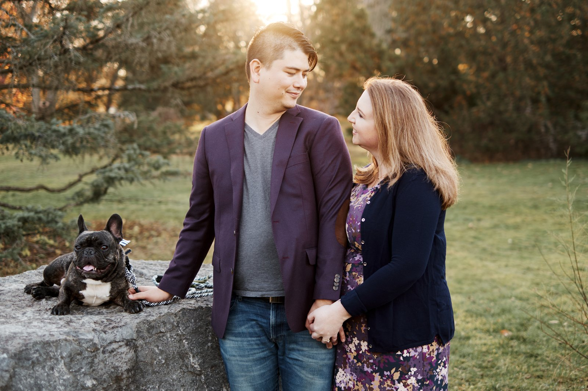

Product leader at Surveil. FinOps contributor. Building intelligence products for the Microsoft channel.

I'm a product leader with 15+ years working across the Microsoft cloud, licensing, and partner channel — now building AI-augmented SaaS at the category level. Today I lead Navigator at Surveil, the product defining the Partner Sales Intelligence category for distributors, resellers, and MSPs.
My work sits at the intersection of messy real-world partner economics and rigorous, AI-augmented product thinking. I believe the best products reduce the user's mental load — which is why I've steered Navigator toward intelligent automation over chatbots, and why I spend about a third of my week in structured discovery with partners and customers.
Outside of shipping Navigator, I co-author FinOps Foundation guidance on SaaS and Microsoft licensing, and I build tooling for product managers. My open-source project CorticalStack is an Obsidian-backed "second brain" that turns Shape Up-style product work into unlimited context for AI agents, while producing AI-native PRDs and specs that agents can implement directly.
Before Navigator, I spent nearly a decade on software licensing work with tier-1 publishers — Oracle, IBM, and Microsoft contract negotiations, license optimization, and audit defense. At the Canadian Medical Association, I led a full-operations program review whose analysis contributed to CMA's 2018 divestiture of MD Financial Management to Scotiabank for $2.585B.
I'm equally at home authoring a PRD, running discovery with a reseller in EMEA, and walking a regional sales team through channel economics. If any of that sounds like your kind of operator, let's talk.
The Microsoft partner ecosystem runs on fragmented data across billing platforms, CRMs, and vendor portals. Navigator turns that mess into revenue intelligence — so distributors, resellers, and MSPs can find, model, and monetize opportunities across their customer estates.
Partners — the distributors, resellers, and MSPs who resell Microsoft cloud at scale — were flying blind on their most important decisions. Where to invest. What to renew. When to upsell. Which customers were at risk.
The tools on the market were built for someone else. Direct-sales platforms (Gong, Clari) assumed teams selling their own product. Vendor-side tools (Partner Center, CloudAscent) only exposed one vendor's view. General BI (Power BI, Tableau) produced pretty dashboards with no embedded workflows. Most partners were stitching the gap with spreadsheets and manual analysis.
No purpose-built sales intelligence platform existed for partners themselves. That was the gap.
I structured Navigator's strategy around five reinforcing priorities — each activating at different intensities across a phased multi-year roadmap.
Underpinning all of it: a programmatic Partner Activation Ladder (L0 → L4) that ties product leading indicators to sales outcomes and phase exit criteria, and an AI & Data Intelligence layer riding on top of a proprietary 280K-organization dataset.
I steered Navigator away from the chatbot pattern early. Slapping a conversational UI on a product rarely changes the user's mental model — it just adds a novelty surface. Instead, we're implementing AI where it reduces cognitive load on the core job.
The flagship example is an NLP-driven campaign builder (in beta) that collapses a 16-field configuration task into a natural-language conversation. Built on AWS Bedrock and Azure AI Foundry. Other AI work spans predictive churn scoring, cohort benchmarking across the 280K dataset, and a proprietary recommendation IP layer for Surveil's M365 and Azure products — one that outperforms Microsoft Advisor by grounding guidance in deterministic, factual evidence chains rather than probabilistic and heuristic rules.
Navigator went from an idea to a production platform serving 50+ partners with visibility into 280,000+ customers, including many of the world's biggest Indirect Providers (distributors). Paying end-customer base grew from ~800 to 2,200+; Monthly Active Users grew from 0 to ~800 over three years.
A proprietary GDAP orchestration method I designed collapsed downstream partner onboarding from days to minutes — directly instrumental in winning the lion's share of new partners on the Surveil platform. Navigator has surfaced $5M+ in identified and realized partner revenue to date, and Surveil's broader M365 / Azure product suite has surfaced substantial customer cost-saving opportunities over the same period.
I own Navigator end-to-end: product strategy, vision, PRDs, spec work, commercial modeling, EULA and contract structures, roadmap, and GTM partnership across NA and EMEA regional business leads.
One direct PM report. Cross-functional dotted-line influence over engineering, design, and post-sales. And about a third of my week spent in structured discovery with partners and customers — the primary input to everything else.
An Obsidian-backed "second brain" structured around three pipelines. The Product pipeline runs Ryan Singer's Shape Up methodology from Idea to Pitch, then branches — at Breadboard into iterative Prototype generation, and at Pitch into PRD authoring, which further expands into structured Use Cases. Meeting and Document pipelines ingest audio, transcripts, and files as structured vault notes that feed context back into the product flow. All outputs are AI-native — PRDs, specs, and prototypes that agents can implement directly.
I'm always up for a conversation about Microsoft channel economics, FinOps, or the product craft of building AI-augmented SaaS.